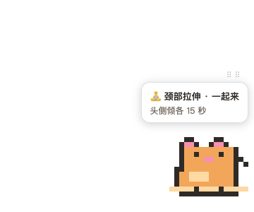
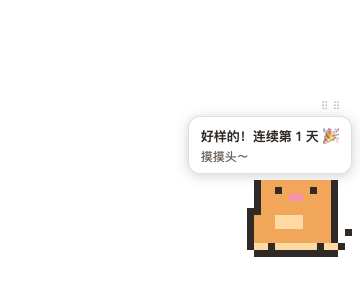

🐱
micro-pet · 微运动桌宠
一只像素猫，定时示范坐姿微运动——摸头打卡，本地养 streak。
「陪着你」，而非「打断你」。



安装 macOS · Apple Silicon
brew install --cask liyuankui/tap/micro-pet未签名应用：首次打开右键 → 打开。也可 Releases 手动下载。
🤖 Paste to your agent 让 AI 替你装 + 定制
请按这两个文档帮我安装并配置 micro-pet 微运动桌宠：
1. 安装：https://raw.githubusercontent.com/liyuankui/workoutpet/master/docs/agent-install-prompt.md
2. 装好后定制提醒计划：https://raw.githubusercontent.com/liyuankui/workoutpet/master/docs/agent-setup-prompt.md粘给 ZCode / Claude / WorkBuddy 等任意 AI 助手——它会自己抓文档、装好验证，再采访你（作息/倦怠/目的/剂量）生成专属调度。
🐾 陪你不打断
非模态提醒：猫自己在角落做动作，看到就跟。2 分钟不理它就安静回去，零弹窗零通知。
⚔️ 四类均衡
下肢 / 肩颈 / 手腕 / 核心自动轮换，最久未练优先——不是纯随机，是均衡教练。
⏰ 时段调度
午饭前后与午后倦怠加密，下班夜间静默。中午打球？那段时间直接静默。
💬 配置即对话
没有设置面板：和你的 AI 聊聊作息，它生成配置写入，校验生效。
🔒 数据全本地
streak 存 ~/.micro-pet/streak.json，零账号零云端零遥测（本网页统计除外）。
🌏 双语
中英界面/动作库/周报，跟随系统或一键切换。
什么是微运动？
30-60 秒一次的坐姿小动作，见缝插针打断久坐。研究显示：每半小时起身活动 5 分钟可使餐后血糖峰值降 58%；日常零散活动每天 4.4 分钟与全因死亡风险降 26-30% 相关。科普全文 →